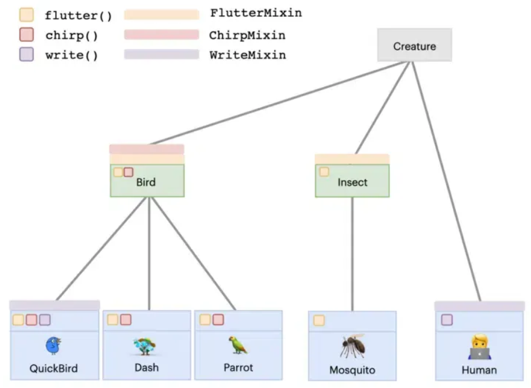
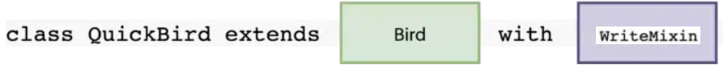

3. Funciones y Métodos en Dart
Los métodos y funciones en Dart proveen mecanismos avanzados para estructurar código modular, admitiendo el paso de parámetros obligatorios y opcionales.
3.1. Parámetros Obligatorios Posicionales
Es el modelo estándar donde el orden en el que se envían las variables determina la recepción de los argumentos:
void main(List<String> arguments) {
muestraNombreCompleto("Vicente", "Català");
}
void muestraNombreCompleto(String nombre, String apellidos) {
print('$nombre $apellidos');
}
3.2. Parámetros Opcionales Posicionales
Para indicar que determinados parámetros no son obligatorios en la invocación del método, se encapsulan
mediante corchetes []. Al poder recibir ausencias de valores, las variables deben tiparse
explícitamente como nullables (?) o en su defecto asignarles un valor predeterminado de
respaldo:
// Ejemplo con parámetros nullables
void muestraNombreCompleto(String nombre, [String? apellidos]) {
print('$nombre $apellidos');
}
// Ejemplo implementando un valor por defecto
void muestraDatos(String nombre, [String? apellidos, int edad = 15]) {
print('$nombre $apellidos ($edad)');
}
3.3. Parámetros Nombrados
Los parámetros nombrados ofrecen una gran legibilidad al invocar funciones ya que obligan a especificar
la etiqueta de la variable. Se declaran usando llaves {} y podemos exigir la presencia
ineludible de un parámetro anteponiendo la palabra clave required. No es imperativo
respetar el orden de declaración al realizar la llamada al método.
void main(List<String> arguments) {
// Invocación explícita mediante los nombres de los atributos
muestraNombreCompleto(nombre: "Vicente", edad: 25, apellidos: "Català");
}
void muestraNombreCompleto({
required String nombre,
required String apellidos,
required int edad,
}) {
print('$nombre $apellidos ($edad)');
}
3.4. Tipado de Retorno
Para retornar valores computados hacia el flujo principal que llamó a la función, se debe especificar el
tipo de dato que devuelve el método en lugar de marcarlo como void, utilizando la palabra
clave return:
String obtieneNombreCompleto({
required String nombre,
required String apellidos,
required int edad,
}) {
return '$nombre $apellidos ($edad)';
}
4. Clases y Programación Orientada a Objetos
Para definir el modelo o plantilla de un objeto se utiliza la palabra reservada class. Por
convenciones estrictas de estilo, los nombres de las clases se estructuran usando la nomenclatura
UpperCamelCase (empezando en mayúscula) y no pueden dar comienzo mediante dígitos o caracteres
especiales.
class Alumno {
String? nombre;
String? apellidos;
int? edad;
bool? repetidor;
}
4.1. Constructores Básicos y Avanzados
El constructor es la función especial encargada de inicializar y crear una instancia en memoria de una clase. El constructor básico estándar por defecto comparte obligatoriamente el mismo nombre exacto que la clase.
// Constructor básico clásico simplificado de Dart
class Alumno {
String nombre;
String apellidos;
int edad;
Alumno(this.nombre, this.apellidos, this.edad);
}
void main() {
// Ejemplo de cómo invocar al constructor para crear una instancia
Alumno nuevoAlumno = Alumno('Carlos', 'García Pérez', 20);
// Acceso a las propiedades del objeto creado
print('Alumno registrado: ${nuevoAlumno.nombre} ${nuevoAlumno.apellidos}, Edad: ${nuevoAlumno.edad}');
}
Adicionalmente, se pueden configurar constructores más sofisticados implementando argumentos nombrados y valores por defecto para flexibilizar la inicialización del objeto:
// Constructor con parámetros nombrados y valores por defecto en Dart
class Docente {
String nombre;
String apellidos;
int edad;
double salario;
Docente({
required this.nombre,
required this.apellidos,
this.edad = 25, // Parámetro opcional con valor por defecto
required this.salario,
});
}
void main() {
// Ejemplo 1: Invocando al constructor con todos los parámetros
Docente profesorA = Docente(
nombre: 'Ana',
apellidos: 'Martínez López',
edad: 42,
salario: 2450.50,
);
// Ejemplo 2: Invocando al constructor omitiendo 'edad' (tomará el valor de 25 por defecto)
Docente profesorB = Docente(
nombre: 'Juan',
apellidos: 'Gómez Ruiz',
salario: 2100.00,
);
// Imprimir un ejemplo
print('Docente A: ${profesorA.nombre}, Edad: ${profesorA.edad}, Salario: ${profesorA.salario}€');
print('Docente B (Edad por defecto): ${profesorB.nombre}, Edad: ${profesorB.edad}');
}
4.2. Múltiples Constructores (Named Constructors)
A diferencia de lenguajes como Java o C#, Dart no soporta la sobrecarga tradicional de constructores con
el mismo nombre y firmas diferentes. Para habilitar múltiples estrategias de construcción,
Dart utiliza los Constructores Nombrados, asignando un alias explícito mediante un
punto
después de la clase class.alias:
class Docente {
String nombre;
String apellidos;
int edad;
double salario;
// Constructor nombrado enfocado a personal en prácticas
Docente.practicas({
required this.nombre,
required this.apellidos,
required this.edad,
}) : salario = 0.0; // Inicializador de variable rígido
// Constructor nombrado para interinos
Docente.interino({
required this.nombre,
required this.apellidos,
required this.edad,
required this.salario,
});
}
void main() {
// Ejemplo 1: Invocando al constructor nombrado '.practicas'
// Nota cómo no pasamos el salario, ya que el propio constructor lo asigna internamente a 0.0
Docente profePracticas = Docente.practicas(
nombre: 'Lucas',
apellidos: 'Sanz Torres',
edad: 23,
);
// Ejemplo 2: Invocando al constructor nombrado '.interino'
// Este constructor sí que nos obliga a pasarle de forma explícita el salario
Docente profeInterino = Docente.interino(
nombre: 'Marta',
apellidos: 'Vidal Soler',
edad: 35,
salario: 1850.75,
);
// Imprimir comprobación en consola
print('Docente en Prácticas: ${profePracticas.nombre}, Salario automático: ${profePracticas.salario}€');
print('Docente Interino: ${profeInterino.nombre}, Salario asignado: ${profeInterino.salario}€');
}
4.3. Herencia y Sobrescritura (@override)
Como lenguaje fuertemente orientado a objetos, todas las clases en Dart heredan de forma implícita de
una superclase base común denominada Object. La herencia explícita permite
extender las propiedades y la lógica funcional de una clase padre hacia una clase hija mediante la
palabra clave extends.
Cuando una clase hija necesita redefinir o personalizar un comportamiento heredado del padre, se hace
uso de la directiva o anotación @override. Mediante @override se puede
sobrescribir cualquier método dentro de una clase. Cabe destacar que el
constructor del hijo está obligado a inicializar y traspasar los parámetros requeridos por la clase base
invocando al elemento super.
- Herencia implícita de Object: Todas las clases tendrán métodos creados por defecto,
a causa de la herencia nativa con la clase
Object. - toString(): Se tiene que sobrescribir en cada clase para que devuelva una cadena de texto con información detallada y personalizada de la misma.
- hashCode(): Asigna un identificador único a la clase. También se puede sobrescribir en caso de necesitar personalizar la lógica de generación de estos identificadores.
class Persona {
String nombre;
int edad;
Persona(this.nombre, this.edad);
void presentarse() {
print("Hola, soy $nombre.");
}
@override
String toString() {
return 'Persona(Nombre: $nombre, Edad: $edad)';
}
}
class Estudiante extends Persona {
String curso;
// Inicialización de variables propias e invocación rigurosa a super
Estudiante(String nombre, int edad, this.curso) : super(nombre, edad);
@override
void presentarse() {
print("Hola, soy el estudiante $nombre del curso $curso.");
}
@override
String toString() {
// Reutilizamos las propiedades heredadas y añadimos la propia de la subclase
return 'Estudiante(Nombre: $nombre, Edad: $edad, Curso: $curso)';
}
}
void main() {
Persona alguien = Persona('Marta', 30);
Estudiante estudiante = Estudiante('Carlos', 21, 'DAM');
// Al imprimir el objeto, automáticamente se invoca el método toString() personalizado
print(alguien); // Salida: Persona(Nombre: Marta, Edad: 30)
print(estudiante); // Salida: Estudiante(Nombre: Carlos, Edad: 21, Curso: DAM)
}
Inicialización de la Superclase: Desde la clase hija siempre se tendrán que inicializar
obligatoriamente los parámetros que requiera la clase padre. Para lograr esto, utilizaremos la sintaxis
de inicialización acoplada mediante : super(parametro1, parametro2, parametroN); justo
después de la declaración del constructor del hijo.
Por otra parte, las variables propias del hijo se inicializan de forma normal dentro
del mismo constructor (utilizando el atajo this.variablePropia), tal y como ocurre con el
resto de las clases en Dart.
// Clase Padre (Superclase)
class Vehiculo {
String marca;
String modelo;
// El constructor del padre requiere obligatoriamente estos dos parámetros
Vehiculo(this.marca, this.modelo);
}
// Clase Hija (Subclase) que hereda de Vehiculo
class Coche extends Vehiculo {
int numPuertas; // Variable propia de la clase hija
// Constructor del hijo:
// 1. Inicializa su variable propia usando 'this.numPuertas'
// 2. Invoca y transfiere rigurosamente los parámetros al padre usando ': super(marca, modelo)'
Coche(String marca, String modelo, this.numPuertas) : super(marca, modelo);
@override
String toString() {
return 'Coche -> Marca: $marca, Modelo: $modelo, Puertas: $numPuertas';
}
}
void main() {
// Al instanciar el Coche, pasamos los datos tanto para el padre como para el hijo
Coche miCoche = Coche('Seat', 'Ibiza', 5);
// El objeto hijo tiene acceso tanto a las propiedades heredadas como a las suyas propias
print(miCoche); // Salida: Coche -> Marca: Seat, Modelo: Ibiza, Puertas: 5
}
4.4. Interfaces y Mixins
- Interfaces: Dart no dispone de una palabra reservada exclusiva para interfaces
(como
interface). En su lugar, cualquier clase puede actuar y operar como interfaz implementando sus firmas obligatoriamente a través de la instrucción claveimplements.
// En Dart, cualquier clase puede actuar como una interfaz.
// Frecuentemente se usan clases abstractas para definir puramente el "contrato".
abstract class Volador {
// Firma del método (sin cuerpo o implementación)
void despegar();
void aterrizar();
}
// Otra interfaz de ejemplo
abstract class Mascota {
String? nombre;
void hacerSonido();
}
// La clase paloma implementa ambas interfaces usando la palabra clave 'implements'.
// Está obligada por contrato a sobrescribir TODOS los métodos y propiedades.
class Paloma implements Volador, Mascota {
@override
String? nombre;
Paloma(this.nombre);
@override
void despegar() {
print('$nombre está abriendo las alas para despegar.');
}
@override
void aterrizar() {
print('$nombre ha tocado tierra firmemente.');
}
@override
void hacerSonido() {
print('Coo coo...');
}
}
void main() {
// Creamos la instancia de la clase que implementa las interfaces
Paloma miPaloma = Paloma('Clementina');
miPaloma.despegar();
miPaloma.hacerSonido();
miPaloma.aterrizar();
}
with, solucionando de forma limpia la ausencia de herencia múltiple

// Los mixins se definen con la palabra clave 'mixin'.
// No pueden tener constructores ni se pueden instanciar directamente.
mixin Caminante {
void caminar() {
print('Caminando sobre el terreno...');
}
}
mixin Nadador {
void nadar() {
print('Nadando bajo el agua...');
}
}
// Clase base
abstract class Animal {
String nombre;
Animal(this.nombre);
}
// Al usar 'with' inyectamos el código y comportamiento de los mixins.
// Pato hereda de Animal y adopta las capacidades de Caminante y Nadador.
class Pato extends Animal with Caminante, Nadador {
Pato(String nombre) : super(nombre);
}
// Tiburon solo adopta la capacidad de Nadador.
class Tiburon extends Animal with Nadador {
Tiburon(String nombre) : super(nombre);
}
void main() {
print('--- Ejemplo de Mixins en Dart ---');
Pato miPato = Pato('Donald');
print('${miPato.nombre}:');
miPato.caminar(); // Método inyectado por el mixin Caminante
miPato.nadar(); // Método inyectado por el mixin Nadador
print('\n---------------------------------');
Tiburon miTiburon = Tiburon('Bruce');
print('${miTiburon.nombre}:');
miTiburon.nadar(); // Método inyectado por el mixin Nadador
// miTiburon.caminar(); // Error de compilación: Tiburón no tiene el mixin Caminante
}
Resumen de POO y Métodos
- Control de Parámetros: Dart provee un control minucioso de parámetros permitiendo combinaciones posicionales obligatorias, opcionales mediante
[]y estructuradas nombradas obligatorias usando{required}, además de gestionar explícitamente el tipado de retorno. - Constructores Especializados: La sobrecarga de constructores tradicional no existe; en su lugar, se recurre a constructores con alias mediante la sintaxis de Named Constructors junto a inicializadores rígidos.
- Herencia y la clase Object: La herencia lineal se realiza con
extends, exigiendo coordinar los constructores hijos con: super(). Todas las clases heredan nativamente deObject, permitiendo sobrescribir métodos estándar comotoString()yhashCode()mediante@override. - Contratos e Interfaces: Cualquier clase puede operar como interfaz. No existe una palabra clave dedicada, sino que se fuerza el cumplimiento estricto de todas sus firmas y propiedades empleando la instrucción
implements. - Composición Modular con Mixins: Ante la ausencia de herencia múltiple directa, se utilizan los
mixinsjunto a la cláusulawithpara inyectar, estructurar y reutilizar bloques funcionales de código en múltiples clases de manera modular y segura.